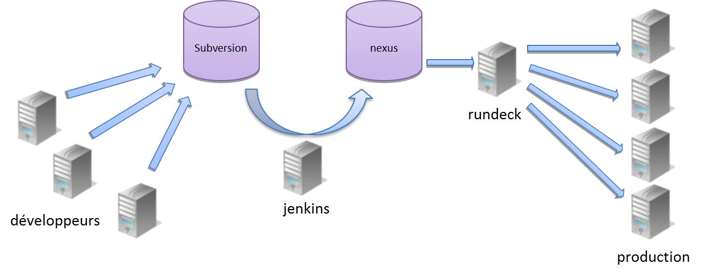

RTL Net
RTL net est la filliale internet de RTL France (RTL, RTL 2, FUN RADIO).
RTL net développe les sites des 3 radios :
www.rtl.fr est le premier site de radio généraliste de France et héberge les blogs de nombreuses personnalités de l'audiovisuel.
RTL net est aussi présent sur les smartphones mais pas en tant qu'éditeur de logiciels.
Les demandes sont faites par
La réalisation est assurée par
Le développement est conduit par un processus agile (agile manifesto) dérivé de la méthodologie scrum.
Ce processus est itératif (2 semaines) et suit les valeurs de l'agilité
Le processus évolue continuellement.
Les outils de l'usine logicielle sont les suivants
Les serveurs utilisés en production
Les principales librairies utilisées dans les développements